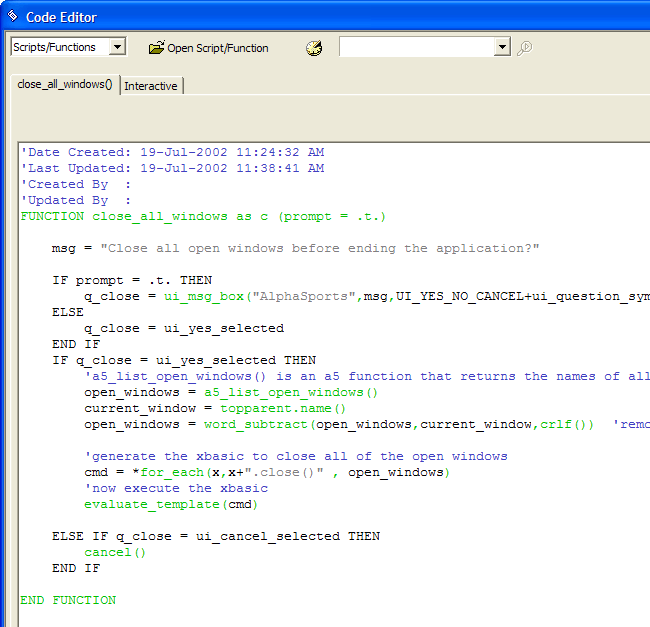

The Code Editor
You write Xbasic scripts in the Code Editor. The Code Editor is a multi-tabbed window that allows you to edit multiple scripts at the same time. The Code Editor always includes at least one tab called the Interactive window where you can test individual lines of Xbasic code and see immediate results. For more information on using the Interactive window, see Testing Xbasic Statements in the Interactive Window.
Action Scripts
The following image shows the Code Editor when you are creating or editing an Action Script.
When editing an Action Script the Code Editor allows you to:
Add new actions to a script
Delete actions from a script
Edit the Xbasic of an action (this may force you to treat it afterwards as Xbasic code, instead of as a Action Script)
Make an action conditional, and define the condition as an expression
The Code Editor allows you to write scripts in two ways. You can use the graphical Action Scripting method (as shown in the above picture), or you can type in Xbasic commands. For details on Action Scripting see the Introduction to Action Scripting book.
Xbasic
The following picture shows the Code Editor when you are creating or editing an Xbasic script or function.

Note how the window distinguishes comments, functions, and user defined code with different colors.
See Also
Using the Xbasic Code Editor, Action Scripting